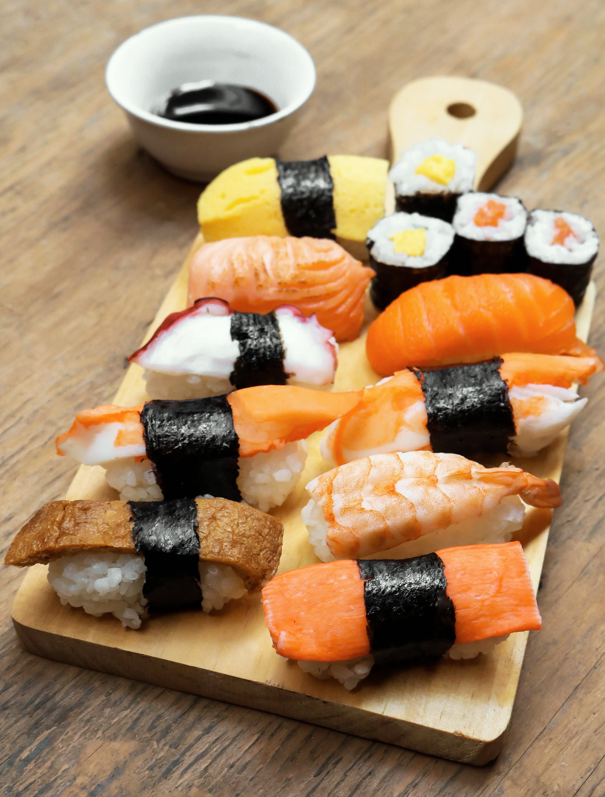
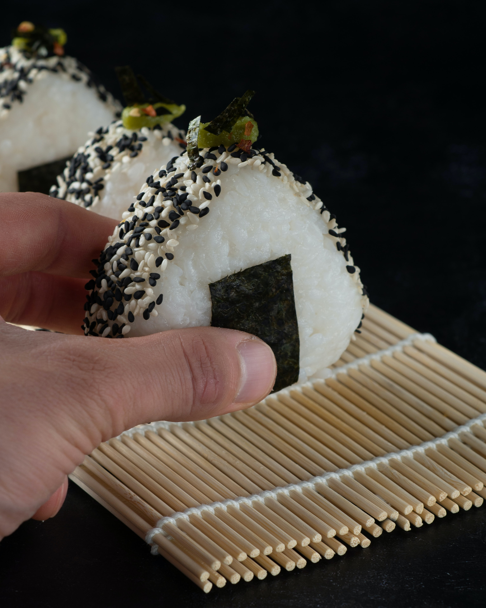

Article

1.Sushi
Sushi adalah salah satu makanan yang memiliki konsep membingungkan namun juga paling lezat di seluruh dunia. Mungkin ide menyantap ikan mentah terdengar menakutkan pada awalnya, akan tetapi ada alasan dibalik suguhan yang menjadi
santapan kesukaan masyarakat di Jepang ini selama berabad-abad dan kenapa dalam beberapa tahun terakhir ini sushi mejadi begitu populer di seluruh belahan dunia. Meskipun sushi versi barat (seperti California roll) kini telah
cukup populer dikenal banyak orang, satu gigitan saja dari sushi khas Jepang sudah cukup untuk menjadi pengalaman yang mengubah hidup. Rendah lemak namun tinggi protein, karbohidrat, vitamin, dan asam omega. Sushi bukan sekedar
salah satu makanan paling sehat di dunia namun juga merupakan makanan yang memiliki rasa lezat yang tidak banyak makanan lain dapat menyerupainya. Ahli sushi, atau disebut taisho, bekerja dengan penuh rasa hormat dalam menjalani
profesinya. Seorang taisho memperlakuan proses pembuatan sushi layaknya sebuah karya seni setelah menempuh puluhan tahun masa pelatihan. Maka dari itu agaknya sangat penting untuk mengetahui ragam cara dan sikap yang ada dalam
menyantap sushi sehingga akan membuat pengalaman lezat ini terasa lebih istimewa.

2.Ramen
Ramen adalah salah satu olahan makanan khas negara Jepang yang terbuat dari bahan dasar berupa mie yang berkuah. Ciri khas dari ramen adalah bentuk mienya yang tipis dan juga berwana kuning. Mie tersebut kemudian dimasukan kedalam
sebuah mangkuk yang berisi kuah yang terbuat dari berbagai jenis kaldu. Kaldu asli Jepang sendiri memang berasal dari kaldu tulang dan lemak babi. Tapi seiring perkembangan kandungan nutrisi dan kebijakan pemerintahan Jepang
yang menginginkan Ramen sebagai makanan pariwisata di negaranya, kuah Ramen bergeser menjadi olahan tulang ayam dan seafood terutama tulang dan kulit udang. Termasuk di Jakarta, kuah Ramen kebanyakan bukan dari babi.

3.Onigiri
Secara sederhana, onigiri adalah nasi kepal berbentuk bulat atau segitiga. Dulunya, onigiri merupakan makanan kegemaran kaum wanita di istana kaisar Jepang dan dikenal juga sebagai omusubi. Konon, menurut catatan sejarah, makanan
seperti onigiri sudah ada sejak abad ke-11, yaitu panganan sejenis nasi berbentuk bola/bulat. Makanan ini digunakan sebagai menu makan siang saat piknik, karena lebih praktis tetapi tetap mengenyangkan. Kemudian, pada tahun
1980-an sekelompok peneliti menggali artefak di Ishikawa, dan menemukan benda seperti gumpalan nasi dari peninggalan masa lalu. Makanan serupa onigiri juga ditemukan di beberapa daerah lainnya di Jepang. Hal ini membuktikan
bahwa onigiri memang sudah dikonsumsi sejak dahulu kala, teman-teman.